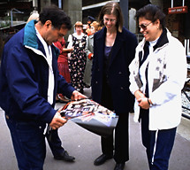

"End of the Line"
Press Conference: Debra Tomson With Participants

Artist Assistant, Debra Tomson [center] looks on and chats with community participants whose sons are featured on the "End of the Line"
announcement poster.